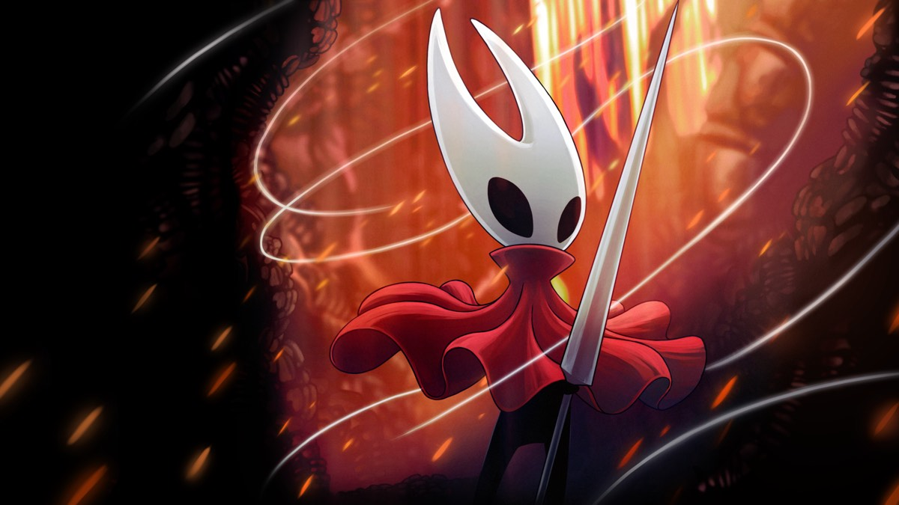
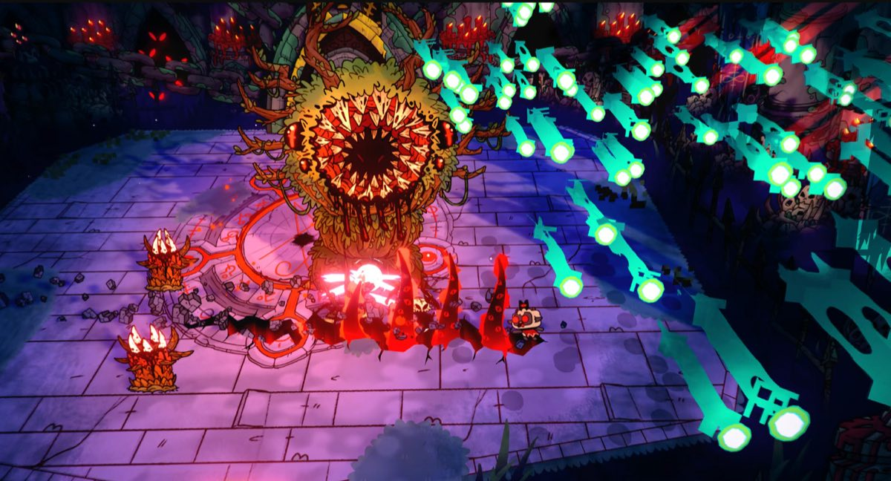

One project, more than 25 platforms.
You build once and publish the same project to desktop, consoles, mobile, the web, and XR headsets — Unity handles the platform-specific work.
Where it ships
- Windows & macOS desktop
- iOS
- Android
- Nintendo Switch
- PlayStation
- Xbox
- Meta Quest
- Apple Vision Pro (visionOS)
- Web
Plus the rest of the 25+ platform list on unity.com.
Games people have actually heard of
Naming a shipped game explains what an engine does faster than any feature list. All three are built with Unity:


Jump Space — Keepsake Games is a third, if you want a newer one.
Two images, 271 KB between them, credited to the press kits they came from. The original's fold is a promotional film. The objection was never to pictures — it was to pictures that don't tell you anything.
It isn't only games
The same real-time 3D engine underneath those games also runs immersive training simulations, product configurators, and virtual showrooms — real-time 3D for industry, not entertainment. That distinction matters more than it looks: it's what decides which licence you actually need. Unity's Personal and Pro plans only cover games and entertainment applications — anything else, above a revenue threshold, needs an Industry licence.